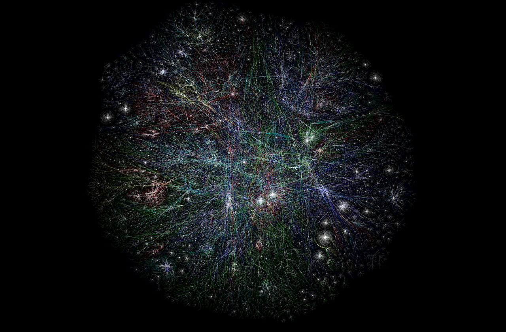

Convergence
Written May 4th 2020, 10:52:08 pm EDT by Dr. Meow

Every way of thinking about the world,
brings us closer together, despite, what we are told.
There is just one little thing to keep in mind,
we have to leave all the bad ideas, behind.
Exchange of ideas came a long way,
but we still need to eliminate foul play.
Because not everyone is educated,
and without wisdom life gets complicated.
Misinformed people are easily swayed,
they are often unprepared, and very scared.
If we build to remove their fears,
they will love us... to tears.
The most powerful early-tool is the Audiobook,
wisdom delivered in a way that's hard to overlook.
It is private, and comes with no shame,
it can take a person from poverty to Hall of Fame.
And the best type of things to listen to,
are memoirs or lectures, that enlarge a world view.
We must stop bad education from tearing us apart,
we each have to learn, and become smart.
This day of Wisdom, and Peace that we yearn,
comes closer each day that we learn.
(image courtesy of Opte Project)